स्क्रीन की बनावट
बाईं ओर ब्लॉक बनाएँ, और दाईं ओर regex तथा लक्ष्य टेक्स्ट पर उसका परिणाम दिखता है।
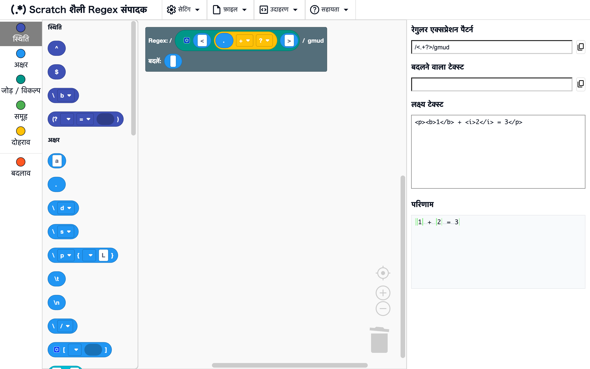
वर्कस्पेस और टूलबॉक्स
स्थानस्क्रीन की बाईं ओर
सबसे बाईं ओर के टूलबॉक्स से ब्लॉक खींचकर वर्कस्पेस में छोड़ें। वर्कस्पेस में शुरू से मूल ब्लॉक होता है, और उससे जुड़े ब्लॉकों से regex बनता है। टूलबॉक्स में किसी श्रेणी के नाम पर क्लिक करने से उस श्रेणी के ब्लॉकों पर पहुँच जाते हैं।
रेगुलर एक्सप्रेशन पैटर्न, बदलने वाला टेक्स्ट, लक्ष्य टेक्स्ट और परिणाम
स्थानस्क्रीन की दाईं ओर
- रेगुलर एक्सप्रेशन पैटर्न: आपका बनाया regex,
/पैटर्न/flagsके रूप में दिखता है - बदलने वाला टेक्स्ट: मूल ब्लॉक के बदलें स्लॉट से जुड़े ब्लॉकों से बना बदलाव
- लक्ष्य टेक्स्ट: वह टेक्स्ट लिखें जिस पर आप regex आज़माना चाहते हैं
- परिणाम: लक्ष्य टेक्स्ट पर regex लगाने का परिणाम (परिणाम का प्रदर्शन देखें)
ब्लॉक या लक्ष्य टेक्स्ट बदलते ही प्रदर्शन तुरंत अपडेट हो जाता है।
परिणाम का प्रदर्शन
जब तक मूल ब्लॉक का बदलें स्लॉट "कोई बदलाव नहीं" है, परिणाम में मेल दिखते हैं, और बदलाव ब्लॉक जोड़ने पर बदला हुआ टेक्स्ट दिखता है।
मेल की हाइलाइटिंग
स्थानपरिणाम (जब बदलें स्लॉट "कोई बदलाव नहीं" हो)
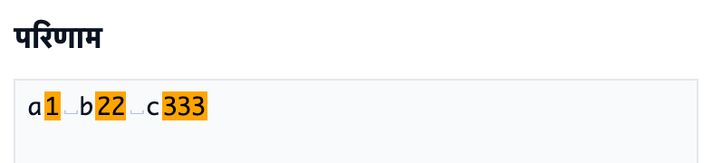
लक्ष्य टेक्स्ट के जो हिस्से regex से मेल खाते हैं, वे नारंगी रंग में दिखते हैं।
उदाहरण
\d+→a1 b22
बदलाव की हाइलाइटिंग
स्थानपरिणाम (जब बदलें स्लॉट से ब्लॉक जुड़े हों)
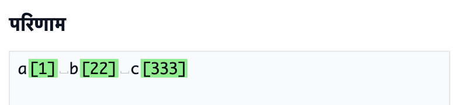
बदला हुआ टेक्स्ट दिखता है, और बदले गए हिस्से हरे रंग में होते हैं।
उदाहरण
- Regex
\d+, बदलें[$&]→a[1] b[22]
व्हाइटस्पेस का दिखना
स्थानपरिणाम
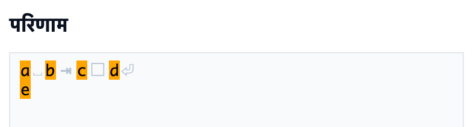
न दिखने वाले व्हाइटस्पेस अक्षर हल्के चिह्नों के रूप में दिखाए जाते हैं।
␣: स्पेस□: फ़ुल-विड्थ स्पेस⇥: टैब⏎: न्यूलाइन
ध्यान दें
ये चिह्न केवल दिखाने के लिए हैं। परिणाम से कॉपी करने पर ये शामिल नहीं होते (मूल व्हाइटस्पेस अक्षर ही कॉपी होते हैं)।
त्रुटि का प्रदर्शन
स्थानपरिणाम
जब regex मान्य नहीं होता (उदाहरण के लिए, बंद न किया गया (), तो परिणाम में त्रुटि संदेश दिखता है।
राइट-क्लिक मेनू
किसी ब्लॉक पर राइट-क्लिक करें (फ़ोन पर देर तक दबाएँ), तो उस ब्लॉक के कामों का मेनू खुलता है।
जो काम उपयोग नहीं हो सकते, वे फीके दिखते हैं।
जिन आइटम के दाईं ओर ? है, उस ? पर क्लिक करने से इस पेज पर उस सुविधा की जानकारी नए टैब में खुलती है।
ब्लॉक में बदलें / टेक्स्ट में बदलें
स्थानब्लॉक पर राइट-क्लिक → "ब्लॉक में बदलें" / "टेक्स्ट में बदलें"
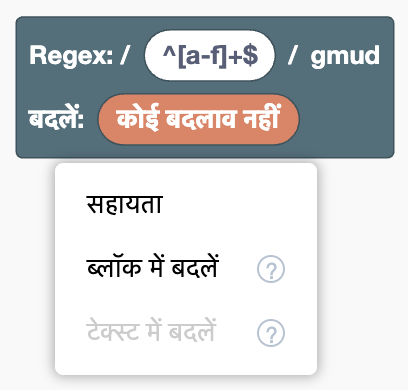
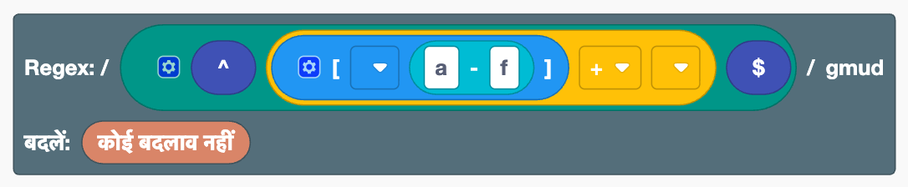
टेक्स्ट के रूप में लिखे regex और ब्लॉकों के बीच, दोनों दिशाओं में बदलता है।
- ब्लॉक में बदलें: टेक्स्ट ब्लॉक को, या मूल ब्लॉक के Regex स्लॉट में लिखे regex को, ब्लॉकों के संयोजन में बदलता है। मूल ब्लॉक पर राइट-क्लिक करने पर उसके Regex स्लॉट की सामग्री बदली जाती है।
- टेक्स्ट में बदलें: जिस ब्लॉक पर आपने राइट-क्लिक किया, उसे उसके अंदर के ब्लॉकों के साथ एक टेक्स्ट ब्लॉक में बदलता है। मूल ब्लॉक के Regex स्लॉट से जुड़े ब्लॉक के लिए, मूल ब्लॉक उस स्थिति में लौट जाता है जिसमें regex सीधे उसमें लिखा होता है।
दोनों को एक बार Ctrl+Z (Mac पर ⌘+Z) से पूर्ववत किया जा सकता है।
उदाहरण
- मूल ब्लॉक के Regex स्लॉट में
^[a-f]+$लिखकर उसे ब्लॉक में बदलें → यह पंक्ति की शुरुआत, अक्षर वर्ग, सीमा,+और पंक्ति का अंत ब्लॉकों का संयोजन बन जाता है
ध्यान दें
[ ]ब्लॉक के अंदर या बदलें स्लॉट में रखे टेक्स्ट ब्लॉक अकेले नहीं बदले जा सकते (बदलने के लिए पूरा[a-f]टेक्स्ट के रूप में लिखें)- टेक्स्ट में बदलकर फिर से ब्लॉक में बदलने पर बाहरी इनपुट जैसी प्रदर्शन सेटिंग वापस नहीं आतीं
- जिन हिस्सों के लिए कोई ब्लॉक नहीं है (जैसे
\x41), वे टेक्स्ट ब्लॉक ही रहते हैं
N को समूहित करें / समूह हटाएँ
स्थानजोड़, विकल्प या बदलाव जोड़ के अंदर के ब्लॉक पर राइट-क्लिक → "2 को समूहित करें" से "5 को समूहित करें", "6 या अधिक को समूहित करें…", "समूह हटाएँ"
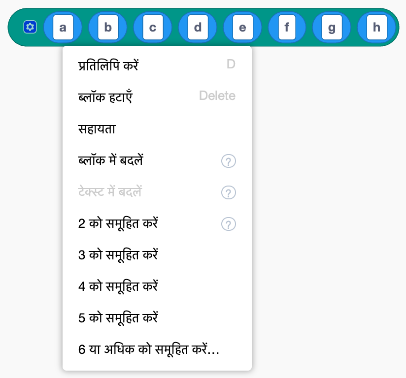

खींचे बिना जोड़ ब्लॉक की सामग्री को फिर से व्यवस्थित करता है।
- N को समूहित करें: जिस ब्लॉक पर आपने राइट-क्लिक किया, उससे दाईं ओर के N आइटम को उसी प्रकार के एक नए ब्लॉक में रखता है
- 6 या अधिक को समूहित करें…: आइटम की संख्या पूछता है, फिर उन्हें समूहित करता है
- समूह हटाएँ: अंदर के उसी प्रकार के ब्लॉक की सामग्री को उसी जगह पर बाहर वाले ब्लॉक में फैला देता है
समूहित करने से बनने वाला regex नहीं बदलता। बाहरी इनपुट / इनलाइन इनपुट के साथ मिलाकर, यह लंबे और जटिल regex को अर्थपूर्ण हिस्सों में बाँटकर पढ़ने में आसान बनाने में मदद करता है।
उदाहरण
- "a" से "h" तक के जोड़ में a पर राइट-क्लिक → "4 को समूहित करें" → यह "(a b c d)", "e", "f", "g", "h" बन जाता है
ध्यान दें
इसे अक्षर वर्ग [ ] के अंदर उपयोग नहीं किया जा सकता ([ ] के अंदर [ ] रखने का अर्थ कुछ और हो जाएगा)।
बाहरी इनपुट / इनलाइन इनपुट
स्थानकई स्लॉट वाले ब्लॉक पर राइट-क्लिक → "बाहरी इनपुट" / "इनलाइन इनपुट"


ब्लॉक के स्लॉट किस तरह लगें, यह बदलता है। "बाहरी इनपुट" स्लॉट को ऊपर-नीचे लगाता है, और "इनलाइन इनपुट" उन्हें फिर से एक पंक्ति में रखता है। जोड़ या विकल्प लंबा होने पर इससे पढ़ना आसान होता है। इससे बनने वाला regex नहीं बदलता।
सहायता
स्थानब्लॉक पर राइट-क्लिक → "सहायता"
ब्लॉक सूची में उस ब्लॉक की जानकारी खोलता है।
ब्लॉकों के साथ काम
ब्लॉकों के बुनियादी काम Scratch जैसे ही हैं। फ़ोन पर आप यही काम टैप और खींचकर कर सकते हैं।
बुनियादी काम
स्थानवर्कस्पेस
- जोड़ना: ब्लॉक को दूसरे ब्लॉक के स्लॉट (खाली हिस्से) तक खींचें
- अलग करना: जुड़े हुए ब्लॉक को बाहर खींचें
- हटाना: ब्लॉक को टूलबॉक्स या कूड़ेदान पर खींचें, या उसे चुनकर Delete कुंजी दबाएँ
- प्रतिलिपि: राइट-क्लिक → "प्रतिलिपि करें"। Ctrl+C / Ctrl+V (Mac पर ⌘+C / ⌘+V) भी उपयोग कर सकते हैं
- पूर्ववत / फिर से करना: Ctrl+Z / Ctrl+Shift+Z (Mac पर ⌘+Z / ⌘+Shift+Z)। वर्कस्पेस के खाली हिस्से पर राइट-क्लिक भी कर सकते हैं
- व्यवस्थित करना: वर्कस्पेस के खाली हिस्से पर राइट-क्लिक → "ब्लॉकों को व्यवस्थित करें"
- ज़ूम इन / आउट: नीचे दाईं ओर के
+-बटन
स्लॉट की संख्या बदलना
स्थानगियर आइकन वाले ब्लॉक (जोड़, विकल्प, अक्षर वर्ग, बदलाव जोड़) पर गियर आइकन क्लिक करें
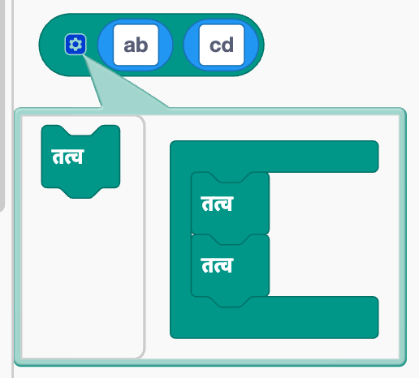
एक छोटा संपादक खुलता है। अंदर के "तत्व" ब्लॉक जोड़ने या हटाने से स्लॉट की संख्या बदलती है। "तत्व" ब्लॉकों का क्रम बदलने से स्लॉट का क्रम भी बदल जाता है।
समूह नाम बनाना, बदलना और हटाना
स्थाननामित समूह, नामित बैकरेफ़रेंस या नामित समूह संदर्भ का ड्रॉपडाउन
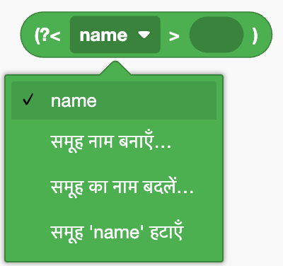
- बनाना: "समूह नाम बनाएँ…" चुनें और नाम लिखें
- नाम बदलना: "समूह का नाम बदलें…" चुनें। उस नाम का उपयोग करने वाले हर ब्लॉक में भी नाम बदल जाता है
- हटाना: "समूह 'नाम' हटाएँ" चुनें। उस नाम का उपयोग करने वाले ब्लॉक भी हट जाते हैं
ध्यान दें
नाम अक्षर से शुरू होना चाहिए और उसमें केवल अक्षर, अंक और _ हो सकते हैं। पहले से मौजूद नाम का उपयोग नहीं कर सकते।
फ़ाइल
इन्हें ऊपर के मेनू में "फ़ाइल" से उपयोग करें। आप अपना बनाया regex फ़ाइल के रूप में सहेज सकते हैं, और उसे फिर से लोड कर सकते हैं।
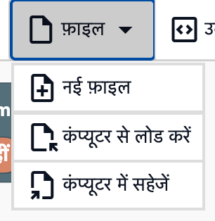
नई फ़ाइल
स्थानफ़ाइल → "नई फ़ाइल"
वर्कस्पेस और लक्ष्य टेक्स्ट को साफ़ करके शुरुआती स्थिति में लौटाता है।
ध्यान दें
सब कुछ बिना पुष्टि के साफ़ हो जाता है, और इसे Ctrl+Z से पूर्ववत नहीं किया जा सकता। जो रखना है, उसे पहले सहेज लें।
सहेजना
स्थानफ़ाइल → "कंप्यूटर में सहेजें"
वर्कस्पेस के ब्लॉक और लक्ष्य टेक्स्ट को regex_workspace.json नाम की JSON फ़ाइल के रूप में डाउनलोड करता है।
लोड करना
स्थानफ़ाइल → "कंप्यूटर से लोड करें"
सहेजी गई JSON फ़ाइल चुनें, ताकि ब्लॉक और लक्ष्य टेक्स्ट सहेजते समय जैसे थे वैसे हो जाएँ।
ध्यान दें
वर्कस्पेस की मौजूदा सामग्री लोड की गई सामग्री से बदल जाती है।
उदाहरण
ऊपर के मेनू में "उदाहरण" से नमूने लोड करें। लोड करने के बाद ब्लॉक बदलकर देखें कि परिणाम कैसे बदलता है।
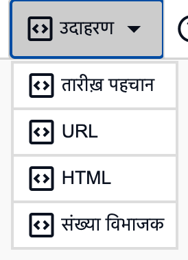
ध्यान दें
वर्कस्पेस की मौजूदा सामग्री नमूने से बदल जाती है।
तारीख़ पहचान
स्थानउदाहरण → "तारीख़ पहचान"
2025-08-20 14:21:03 जैसी तारीख़-समय को समूहों से वर्ष, महीना, दिन, घंटा और मिनट में बाँटता है, और बदलाव से उन्हें 2025/08/20⇥14:21 के रूप में फिर से व्यवस्थित करता है।
URL
स्थानउदाहरण → "URL"
नामित समूहों से URL का डोमेन और पाथ निकालता है, और बदलाव से उन्हें "डोमेन→पाथ" के रूप में बदलता है।
HTML
स्थानउदाहरण → "HTML"
<.+?> से केवल HTML टैग हटाता है।
? को + ब्लॉक से हटाकर देखें कि सब कुछ कैसे हट जाता है (कम से कम मेल)।
संख्या विभाजक
स्थानउदाहरण → "संख्या विभाजक"
पीछे देखना और आगे देखना का उपयोग करके अंकों के बीच की स्थितियों से मेल खाता है, और 1340 को एक-एक अंक करके 1, 3, 4, 0 में अलग करता है।
सेटिंग
इन्हें ऊपर के मेनू में "सेटिंग" से उपयोग करें।
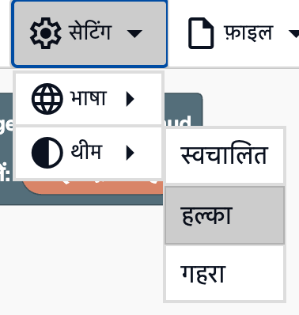
ध्यान दें
सेटिंग सहेजी नहीं जातीं, इसलिए पेज फिर से खोलने पर वे डिफ़ॉल्ट पर लौट जाती हैं।
थीम
स्थानसेटिंग → "थीम"
- स्वचालित: आपके डिवाइस की सेटिंग के अनुसार हल्के और गहरे के बीच बदलता है
- हल्का: हल्के रंगों का उपयोग करता है
- गहरा: गहरे रंगों का उपयोग करता है
भाषा
स्थानसेटिंग → "भाषा"
स्क्रीन और ब्लॉकों की भाषा बदलता है। 日本語, English, 简体中文, Español, 한국어 और हिंदी में से चुनें। शुरुआत में यह आपके ब्राउज़र की भाषा के अनुसार होती है (भाषा समर्थित न हो तो English)।
अन्य
संदर्भ पेज खोलना
स्थानसहायता → "ब्लॉक सूची" / "सुविधाएँ"
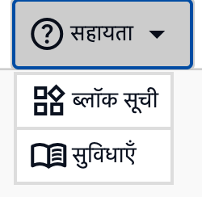
ब्लॉक सूची या यह पेज (सुविधाएँ) नए टैब में खोलता है। जिन ब्लॉकों पर आप काम कर रहे हैं, वे वैसे ही रहते हैं।
ध्यान दें
संदर्भ पेज संपादक की ही छह भाषाओं में उपलब्ध हैं, और संपादक में चुनी गई भाषा में खुलते हैं।
कॉपी
स्थानरेगुलर एक्सप्रेशन पैटर्न और बदलने वाला टेक्स्ट के दाईं ओर के बटन
regex पैटर्न (/पैटर्न/flags के रूप में) या बदलने वाले टेक्स्ट को क्लिपबोर्ड पर कॉपी करता है।
आप इसे अपने प्रोग्राम में पेस्ट कर सकते हैं।
लक्ष्य टेक्स्ट में टैब लिखना
स्थानलक्ष्य टेक्स्ट
लक्ष्य टेक्स्ट फ़ील्ड में Tab कुंजी दबाने से दूसरे फ़ील्ड पर जाने के बजाय टैब अक्षर जुड़ता है। यह टैब से अलग किए गए डेटा को आज़माने में उपयोगी है।